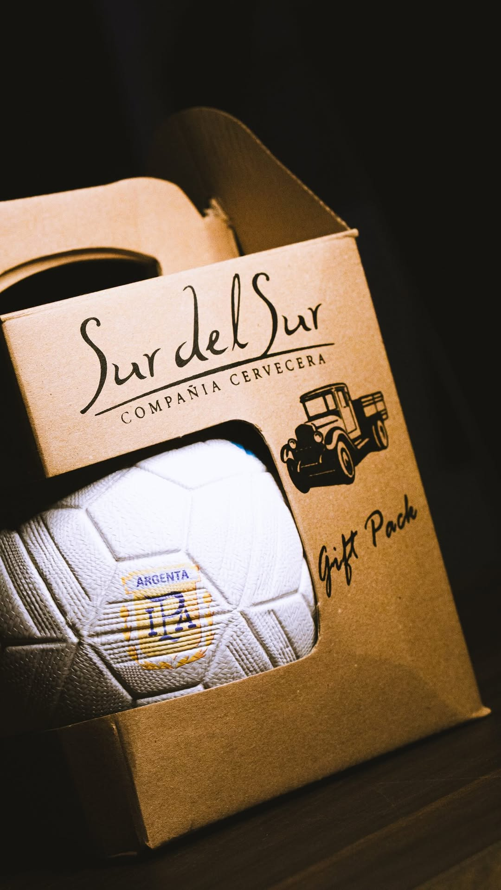

N.° 011 — SERVIDO
Recién
servida,
como debe ser.
servida,
como debe ser.
TIRADA DE BARRIL · SIN FILTRAR
Fotos bajadas del Instagram real @sur.del.sur (contenido propio de ellos), tratadas con duotono kraft/cobre/bosque + el sistema de sello y ficha de espécimen del kit. Así se vería su contenido real ya existente pasado por el filtro de marca.
